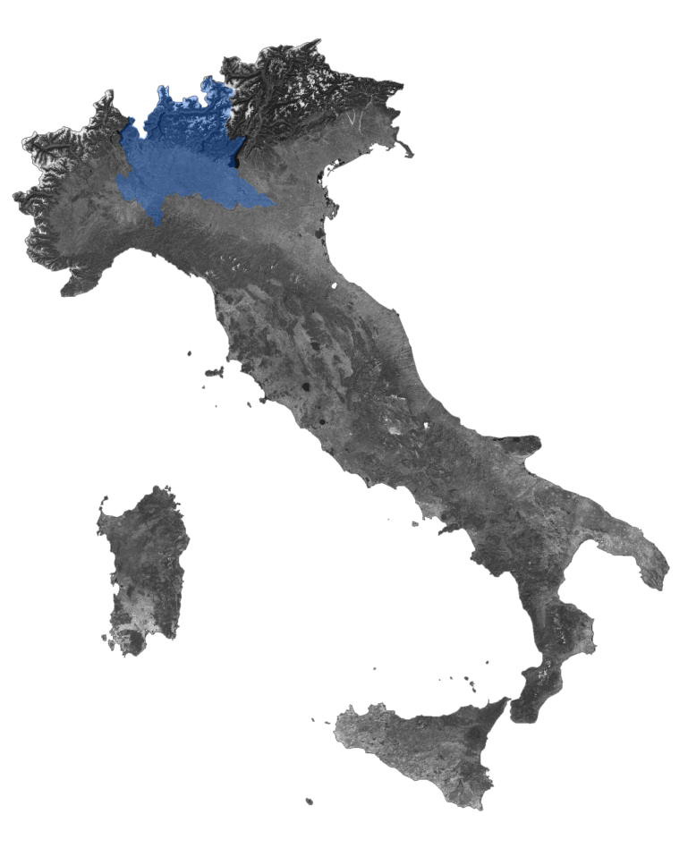

A landslide susceptibility assessment for Valle Imagna, Lombardia
This project is a product of the course GEOGRAPHIC INFORMATION SYSTEMS taken in
the Spring semester of 2023, A.Y. 2022-2023.
It is also accessible on GitHub.
Special thanks to Prof. Maria Antonia Brovelli, and our Tutors: Lorenzo Amici, Angelly de Jesus Pugliese Viloria, Juan Pablo Duque Ordonez, Alberto Vavassori, and Dr. Vasil Yordanov.

Region of Lombardy, Italy: where our study site, Valle Imagna, is located
AN INTERACTIVE PLATFORM TO INTERPRET LANDSLIDE SUSCEPTIBILITY & EXPOSURE
Welcome to our WebGIS Lab project showcasing the results of our comprehensive landslide susceptibility mapping and assessment for the Imagna Valley in Lombardy, Italy. Discover the susceptibility levels, key insights, landslide hazard, and exposure risks for our site.
Join us in exploring this dynamic interface and gain valuable information for informed decision-making in
land-use planning and disaster mitigation.
Who we are: Group 5
Iyad Abdi
Iyad is an American student pursuing a Master of Science in Urban Planning & Policy Design at the Politecnico di Milano through the Fulbright Program.
Filippo Bissi
Filippo is an urban planner from Milan. He is currently enrolled in the Geoinformatics Engineering MSc. program at Politecnico di Milano.
Valerio Paoloni
Valerio is Master of Science student from Rome and is pursuing a degree in Geoinformatics Engineering at Politecnico di Milano.
Core Datasets Behind Our Analysis

Landslide Inventory
Inventory dataset of landslides in Italy since 1996, used for training and validating our machine learning model.

Digital Terrain Model (DTM)
Raster dataset representing the terrain surface consisting of XYZ coordinates, essentially a 3D model of the topography.

Points Layer
Data points from simplified polygons in our Landslide inventory processed via Random Forest ML algorithm using R to generate the susceptibility map.

Population Data
Spatial raster (GeoTiff) of the number of people per grid-cell/pixel utilizing the WGS84 Geographic Coordinate System, available for the year 2020.